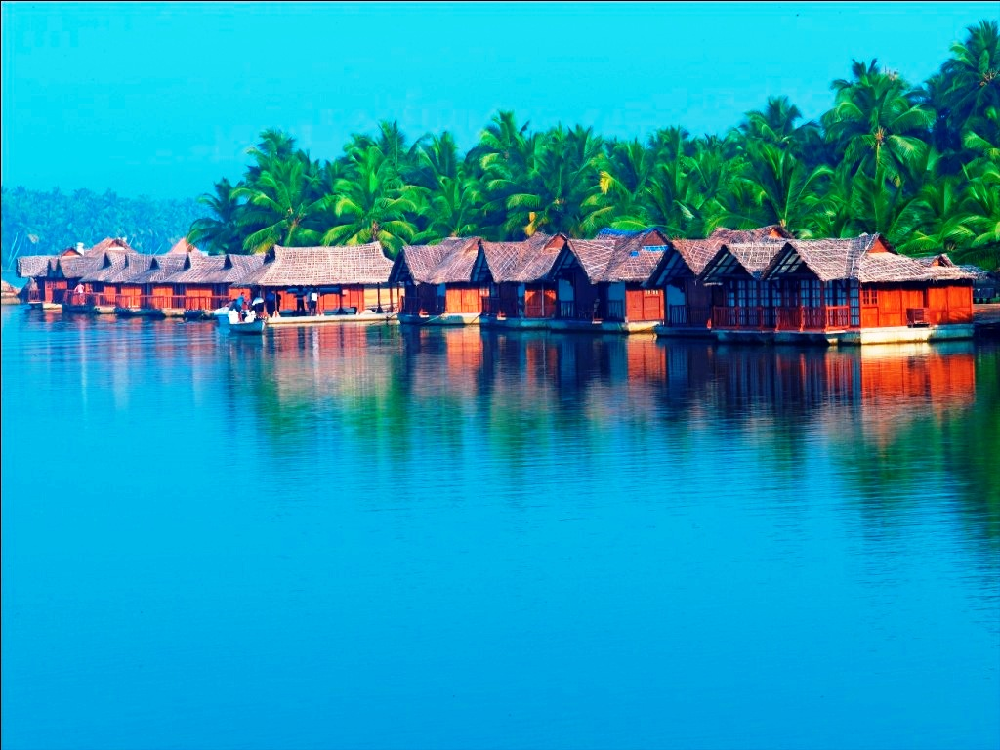

Kuthiramalika
Kuthiramalika is a palace built by Swathi Thirunal Rama Varma on the south-eastern side of Padmanabhaswamy temple, Thiruvananthapuram. Built in the 1840s, Kuthiramalika is an example of traditional Kerala architecture, with its typical sloping roofs, overhanging eaves, pillared verandahs and enclosed courtyards.

Napier Museum
The Napier Museum is an art and natural history museum situated in Thiruvananthapuram, India. The Museum is grounds to the Trivandrum Zoo, one of the oldest zoological gardens in India. Napier Museum Welcome to the treasure house of ancient culture and legacy of God's Own Country that lies in the heart of the capital city.

Poovar Island
About Poovar Beach & Backwater. Poovar is a small coastal, fisherman village located 35 km from Trivandrum and 20 km from Kovalam. Poovar Island is surrounded by a river called Neyyar. Poovar islands is a beautiful place with magical piece of land separating an ocean and a river. It’s absolute nature and typical Kerala we see in movies!